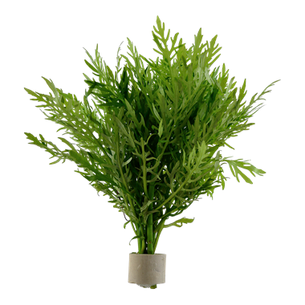
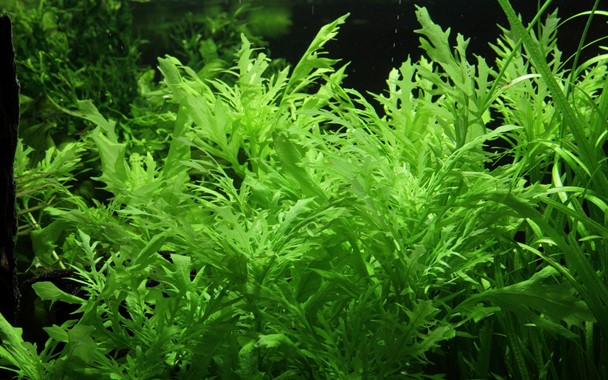
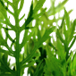

<div class="bg-white">
    <div class="pt-6">
        <nav aria-label="Breadcrumb">
            <ol role="list" class="max-w-2xl mx-auto px-4 flex items-center space-x-2 sm:px-6 lg:max-w-7xl lg:px-8">
                <li>
                    <div class="flex items-center">
                        <a href="#" class="mr-2 text-sm font-medium text-gray-900">
                            Plants
                        </a>
                        <svg width="16" height="20" viewBox="0 0 16 20" fill="currentColor" xmlns="http://www.w3.org/2000/svg" aria-hidden="true" class="w-4 h-5 text-gray-300">
                            <path d="M5.697 4.34L8.98 16.532h1.327L7.025 4.341H5.697z" />
                        </svg>
                    </div>
                </li>

                <li>
                    <div class="flex items-center">
                        <a href="#" class="mr-2 text-sm font-medium text-gray-900">
                            Easy
                        </a>
                        <svg width="16" height="20" viewBox="0 0 16 20" fill="currentColor" xmlns="http://www.w3.org/2000/svg" aria-hidden="true" class="w-4 h-5 text-gray-300">
                            <path d="M5.697 4.34L8.98 16.532h1.327L7.025 4.341H5.697z" />
                        </svg>
                    </div>
                </li>

                <li class="text-sm">
                    <a href="#" aria-current="page" class="font-medium text-gray-500 hover:text-gray-600">
                        Hygrophila Difformis
                    </a>
                </li>
            </ol>
        </nav>


        <!-- Image gallery -->
        <div class="grid mt-6 max-w-2xl mx-auto sm:px-6 lg:max-w-7xl lg:px-8 lg:grid lg:grid-cols-4 lg:gap-x-8">
            <!-- 
            <owl-carousel-o [options]="customOptions">
                <ng-template carouselSlide *ngFor="let banner of banners">
                    <div>
                        
                    </div>
                </ng-template>
            </owl-carousel-o> -->
            <div class="hidden aspect-w-3 aspect-h-4 rounded-lg overflow-hidden lg:block">
                
            </div>
            <div class="hidden aspect-w-3 aspect-h-4 rounded-lg overflow-hidden lg:block">
                
            </div>
            <div class="hidden aspect-w-3 aspect-h-4 rounded-lg overflow-hidden lg:block">
                
            </div>
            <div class="hidden aspect-w-3 aspect-h-4 rounded-lg overflow-hidden lg:block">
                
            </div>
        </div>
        <div class="grid mt-6 max-w-2xl mx-auto sm:px-6 lg:max-w-7xl lg:px-8 lg:grid lg:grid-cols-3 lg:gap-x-8">
            <div class="ml-6 pt-6 mt-4 col-span-2">
                <h1 class="font-bold ">Hygrophila Difformis</h1>
                <p class="mt-6">Hygrophila difformis from Asia is beautiful and undemanding stem plant. Stems becomes 20-30 cm tall and 6-12 cm wide. A plant for beginners, which will help create balance in the aquarium from the start. Its rapid growth helps prevent
                    algae because the plant absorbs a great number of nutrients from the water. The shortage of micronutrients leads to pale leaves, which may be an indication that the aquarium needs fertiliser. In large aquariums its lobed leaves can
                    create a distinctive group. A bundle of stems or young plants gathered in an anchor. Remove the anchor and split into separate plants. Regarding stem plants, remove the leaves from the lowest 5 cm (2“). Remove any damaged leaves. Plant
                    the individual plants with some distance into the bottom substrate. Roots will develop soon and the plant start growing.</p>
            </div>
            <div class="ml-6 pt-6 mt-4 ">
                <h1 class="font-bold">Plant Info</h1>
                <table class="mt-6">
                    <tbody>
                        <tr>
                            <th class="text-left">Type:
                            </th>
                            <td class="text-right">Stem</td>
                        </tr>
                        <tr>
                            <th class="text-left">Origin:</th>
                            <td class="text-right">Asia</td>

                        </tr>
                        <tr class="plantInfoHelpText" id="plant-spec-help-origin">
                        </tr>
                        <tr>
                            <th class="text-left">Growth rate:</th>
                            <td class="text-right">Fast</td>

                        </tr>
                        <tr class="plantInfoHelpText" id="plant-spec-help-growthrate">

                        </tr>
                        <tr>
                            <th class="text-left">Height:</th>
                            <td class="text-right">20 - 30+</td>

                        </tr>
                        <tr class="plantInfoHelpText" id="plant-spec-help-height">
                        </tr>
                        <tr>
                            <th class="text-left">Light demand:</th>
                            <td class="text-right">Low</td>

                        </tr>
                        <tr class="plantInfoHelpText" id="plant-spec-help-light">
                        </tr>
                        <tr>
                            <th class="text-left">CO2 :
                            </th>
                            <td class="text-right">Low</td>
                        </tr>
                        <tr class="plantInfoHelpText" id="plant-spec-help-co2">
                        </tr>
                    </tbody>
                </table>
            </div>
        </div>

    </div>
</div>